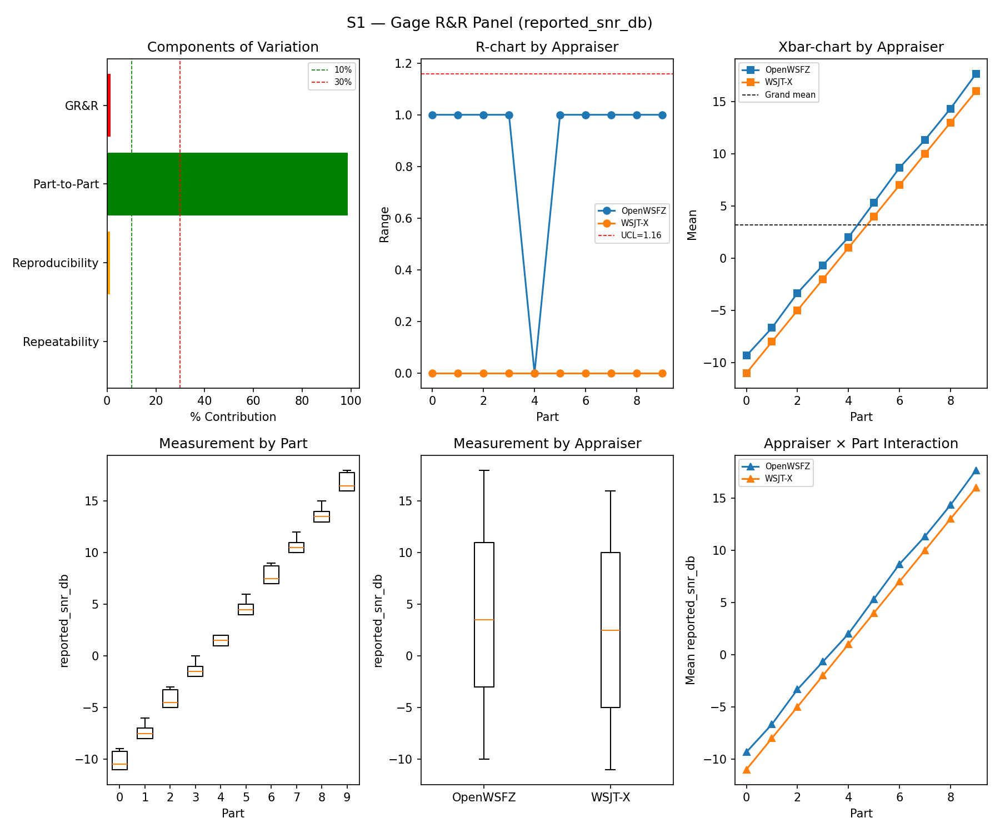
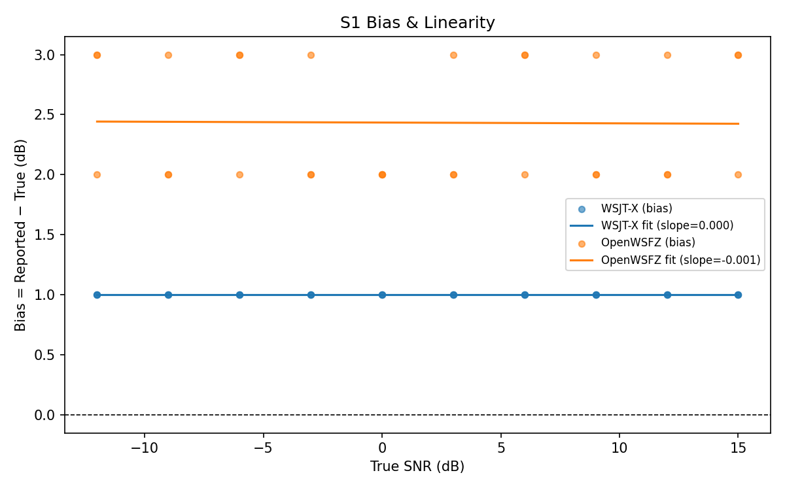
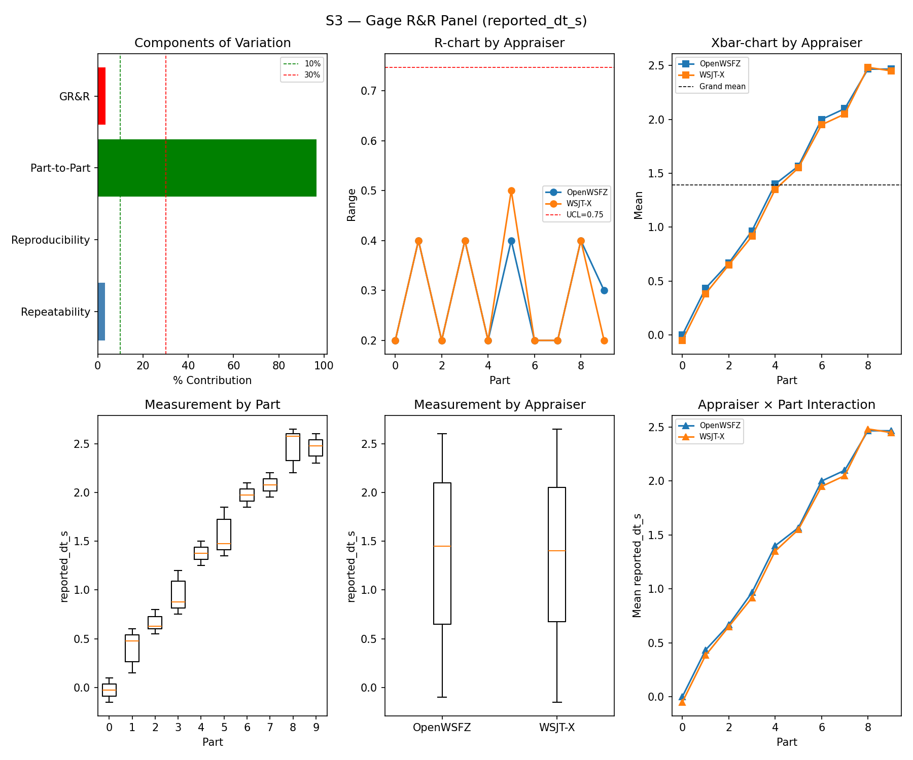
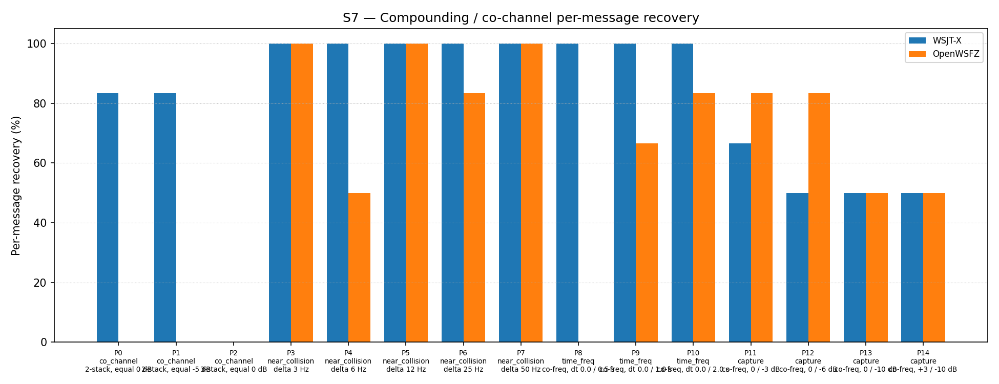
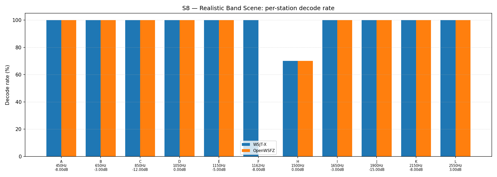

OpenWSFZ R&R Study Report — v2
Note: This is a retroactively structured version of the original report (
report.md) for compliance with NFR-023 (five mandatory sections, STUDY-SPEC §9.0). The original report is preserved unchanged and remains the authoritative record. Section §5 (Recommendations) is omitted — this is a historical report predating NFR-023; recommendations cannot be reconstructed without anachronistic interpretation. The data, results, and verdicts are identical toreport.md; only §1 (Study Hypothesis) and §2 (Data Summary) have been added as formal framing.
1. Study Hypothesis
Purpose: First complete execution of the OpenWSFZ R&R scenario suite (S1–S8). This run establishes the measurement system baseline for all metric types and provides the first quantitative characterisation of OpenWSFZ decoding performance across SNR, frequency, timing, attribute, and co-channel scenarios.
Hypotheses under test:
-
H1 (SNR measurement system): OpenWSFZ SNR reporting meets AIAG measurement system adequacy criteria — %GR&R (variance contribution) < 30% and ndc ≥ 5. SNR bias direction and magnitude are measured as a secondary finding; a formal bias acceptance criterion is not yet established at the time of this run.
-
H2 (Frequency measurement system): OpenWSFZ frequency reporting meets AIAG criteria (%GR&R < 30%, ndc ≥ 5). Expected to pass given the stable GFSK carrier synthesis in the R&R harness.
-
H3 (Timing measurement system): OpenWSFZ DT reporting meets AIAG criteria after removing the known WSJT-X DT convention offset (~−0.55 s relative to UTC slot boundary vs harness epoch; tracked in R&R-003, GitHub #1).
-
H4 (Attribute agreement — S4/S5): Both appraisers achieve Cohen's κ = 1.000 vs a single-signal truth vector on isolated decode and signal-free scenarios. This is the simplest possible attribute test (ideal SNR, no interference); κ < 1.000 would indicate a basic detection failure in controlled conditions.
-
H5 (Co-channel baseline — S7/S8): Co-channel and band-scene decode performance is characterised for the first time. No AIAG pass threshold is defined for these informational scenarios; results establish the D-001 investigation baseline.
Audio chain at run time: Synthesiser applied a brickwall FFT noise cutoff at 4 700 Hz
(initial noise-bandwidth fix, introduced 2026-06-07). The Kaiser FIR replacement
(fix-synth-brickwall-noise-filter, merged d54a4b0 2026-06-08) was applied one day after
this run. The brickwall Gibbs artefact (spectral ridge at 4 kHz) was therefore present in
multi-signal scenarios (S4, S7, S8). Single-signal scenarios (S1, S1b, S2, S3, S5) used
full-bandwidth white noise (0–24 kHz); the noise bandwidth mismatch does not affect
comparisons where both appraisers receive identical audio.
Hardware note: A hardware interruption occurred mid-S7. See §3.6 integrity note.
2. Data Summary
| Field | Value |
|---|---|
| Run date | 2026-06-07 |
| OpenWSFZ SHA | e4a398256f28408d1f0282e2c9e9cd261b5aca16 |
| WSJT-X version | WSJT-X 2.7.0 (inferred from binary date 2025-02-04) |
| FT8_SHIM_VERSION | 20260004 |
| PCM normalisation | None (not yet implemented) |
| Noise filter | Brickwall FFT at 4 700 Hz (pre-Kaiser-FIR; Gibbs artefact present) |
| Scenarios run | S1, S1b, S2, S3, S4, S5, S7, S8 (complete suite) |
| Signal source | Synthetic (GFSK encoder, Q-prefix calls per NFR-021) |
S1 measurement dimensions:
| Field | Value |
|---|---|
| SNR ladder | −12, −9, −6, −3, 0, 3, 6, 9, 12, 15 dB (10 parts) |
| Trials per part | 3 |
| Appraisers | WSJT-X, OpenWSFZ (crossed design) |
| Valid measurement pairs | 60 |
Open defects at run time:
| ID | Severity | Status | Description |
|---|---|---|---|
| D-001 | High | Open (first quantification from this run) | Co-channel decode gap vs WSJT-X; S7 designed to characterise this |
Defects identified by this run:
| Finding | Description | Subsequent action |
|---|---|---|
| SNR bias +2.43 dB | OpenWSFZ SNR over-reads by 2.43 dB; exceeds ±2.0 dB threshold | Formally raised as D-002; resolved in fix/d002-snr-bias (SHA 0a0f8a5, 2026-06-11) |
| Co-channel gap | OpenWSFZ 0/6 on equal-SNR 2-stacks; 0/6 on 0.5 s time-offset | D-001; open |
Acceptance thresholds:
| Metric | Threshold | Source |
|---|---|---|
| %GR&R (variance contribution) | < 30% | AIAG MSA |
| ndc | ≥ 5 | AIAG MSA |
| Attribute κ vs truth (S4/S5) | ≥ 0.90 (PASS) / ≥ 0.70 (conditional) | AIAG attribute study |
| False-positive rate (S5) | 0% | STUDY-SPEC §10 |
| SNR bias | ±2.0 dB (advisory at run time; formalised post-run in spec.md) | D-002 investigation |
3. Results
3.1 S1 — SNR Measurement System (reported_snr_db)
Variance Components
| Component | σ² | %Contribution |
|---|---|---|
| Repeatability | 0.15 | 0.18% |
| Reproducibility | 1.02 | 1.23% |
| Part-to-Part | 82.44 | 98.60% |
| Total GR&R | 1.17 | 1.40% |
| Total | 83.62 | 100.00% |
Study Metrics
| Metric | Value | Verdict |
|---|---|---|
| %Tolerance (GR&R) | 65.03% | PASS |
| %Study Var (GR&R) | 11.85% | — |
| ndc | 11 | PASS |

Bias & Linearity
| Appraiser | Mean Bias (dB) | Slope | Intercept | R² | Verdict |
|---|---|---|---|---|---|
| WSJT-X | +1.00 | 0.000 | 1.000 | 0.000 | PASS |
| OpenWSFZ | +2.43 | -0.001 | 2.434 | 0.000 | FAIL |

3.2 S1b — Low-SNR Threshold Study
Decode rate at SNRs excluded from the redesigned S1 ladder (−24 to −15 dB). Informational — no AIAG threshold.
Per-part decode rate
| Part | True SNR (dB) | WSJT-X decoded | WSJT-X rate | OpenWSFZ decoded | OpenWSFZ rate |
|---|---|---|---|---|---|
| P0 | -24.00 | 0/3 | 0.00% | 0/3 | 0.00% |
| P1 | -21.00 | 3/3 | 100.00% | 0/3 | 0.00% |
| P2 | -18.00 | 3/3 | 100.00% | 3/3 | 100.00% |
| P3 | -15.00 | 3/3 | 100.00% | 3/3 | 100.00% |
Overall decode rate — WSJT-X: 75.00% OpenWSFZ: 50.00%

3.3 S2 — Frequency Measurement System (reported_freq_hz)
Variance Components
| Component | σ² | %Contribution |
|---|---|---|
| Repeatability | 0.15 | 0.00% |
| Reproducibility | 0.40 | 0.00% |
| Part-to-Part | 652845.67 | 100.00% |
| Total GR&R | 0.55 | 0.00% |
| Total | 652846.22 | 100.00% |
Study Metrics
| Metric | Value | Verdict |
|---|---|---|
| %Tolerance (GR&R) | 55.62% | PASS |
| %Study Var (GR&R) | 0.09% | — |
| ndc | 1536 | PASS |

3.4 S3 — Timing Measurement System (reported_dt_s)
Variance Components
| Component | σ² | %Contribution |
|---|---|---|
| Repeatability | 0.03 | 3.30% |
| Reproducibility | 0.00 | 0.07% |
| Part-to-Part | 0.76 | 96.64% |
| Total GR&R | 0.03 | 3.36% |
| Total | 0.79 | 100.00% |
Study Metrics
| Metric | Value | Verdict |
|---|---|---|
| %Tolerance (GR&R) | 244.31% | PASS |
| %Study Var (GR&R) | 18.34% | — |
| ndc | 7 | PASS |

WSJT-X DT correction applied. A +0.55 s offset was added to WSJT-X
reported_dt_sbefore ANOVA to remove the ≈ −0.55 s convention difference between WSJT-X (DT relative to nominal FT8 TX start) and the harness (DT relative to UTC slot boundary). See R&R-003 (GitHub #1).
3.5 Attribute Agreement Analysis (S4 positives + S5 negatives)
κ computed over a pooled population: S4 injected messages (truth = present) and S5 signal-free slots (truth = absent). κ verdicts below are advisory — the §10 attribute gate is pending Captain ratification of this pooled method.
Confusion vs truth
| Appraiser | TP | FN | FP | TN | Recovery | Specificity |
|---|---|---|---|---|---|---|
| WSJT-X | 15 | 0 | 0 | 12 | 100.00% | 100.00% |
| OpenWSFZ | 15 | 0 | 0 | 12 | 100.00% | 100.00% |
Kappa (advisory)
| Pair | κ | 95% CI | Verdict (advisory) |
|---|---|---|---|
| OpenWSFZ_vs_truth | 1.000 | [1.00, 1.00] | PASS |
| WSJT-X_vs_truth | 1.000 | [1.00, 1.00] | PASS |
| between_appraisers | 1.000 | — | PASS |
Within-app repeatability (decision consistency across trials)
| Appraiser | Consistent groups |
|---|---|
| WSJT-X | 100.00% |
| OpenWSFZ | 100.00% |
False-positive rate (S5)
| Appraiser | FP rate | Verdict |
|---|---|---|
| WSJT-X | 0.00% | PASS |
| OpenWSFZ | 0.00% | PASS |
3.6 S7 — Co-Channel / Compounding Overlap
Hardware interruption: A hardware failure occurred partway through S7, specifically after part 3 trial 0 of 15 parts × 3 trials. The 23 invalid S7 truth rows (parts 0–3 partial, all contaminated by the failure) were removed from
truth.csvbefore any matching was performed. S7 was replayed in full from the beginning once the hardware was restored. The fresh 93 truth rows carry new UTC timestamps; any stale S7 decode events are ignored by the matcher. All other scenarios were unaffected. The S7 results below are from the complete, uncontaminated replay.
Per-message recovery when 2–3 signals occupy the same or near-same audio frequency / time slot. Informational — no AIAG threshold is defined for co-channel separation.
Recovery by overlap family
| Overlap family | WSJT-X | OpenWSFZ |
|---|---|---|
| capture | 54.17% | 66.67% |
| co_channel | 47.62% | 0.00% |
| near_collision | 100.00% | 86.67% |
| time_freq | 100.00% | 50.00% |
| all | 76.34% | 54.84% |
Capture effect (co-channel, unequal SNR)
| Signal | WSJT-X | OpenWSFZ |
|---|---|---|
| strong | 100.00% | 100.00% |
| weak | 8.33% | 33.33% |
Between-app per-signal agreement: 72.04%
Per-part detail
| Part | Family | Condition | WSJT-X | OpenWSFZ |
|---|---|---|---|---|
| P0 | co_channel | 2-stack, equal 0 dB | 5/6 | 0/6 |
| P1 | co_channel | 2-stack, equal -5 dB | 5/6 | 0/6 |
| P2 | co_channel | 3-stack, equal 0 dB | 0/9 | 0/9 |
| P3 | near_collision | delta 3 Hz | 6/6 | 6/6 |
| P4 | near_collision | delta 6 Hz | 6/6 | 3/6 |
| P5 | near_collision | delta 12 Hz | 6/6 | 6/6 |
| P6 | near_collision | delta 25 Hz | 6/6 | 5/6 |
| P7 | near_collision | delta 50 Hz | 6/6 | 6/6 |
| P8 | time_freq | co-freq, dt 0.0 / 0.5 s | 6/6 | 0/6 |
| P9 | time_freq | co-freq, dt 0.0 / 1.0 s | 6/6 | 4/6 |
| P10 | time_freq | co-freq, dt 0.0 / 2.0 s | 6/6 | 5/6 |
| P11 | capture | co-freq, 0 / -3 dB | 4/6 | 5/6 |
| P12 | capture | co-freq, 0 / -6 dB | 3/6 | 5/6 |
| P13 | capture | co-freq, 0 / -10 dB | 3/6 | 3/6 |
| P14 | capture | co-freq, +3 / -10 dB | 3/6 | 3/6 |

3.7 S8 — Realistic Band Scene
Holistic decode-rate benchmark: 12 simultaneous stations across 450–2550 Hz at realistic SNR spread (−15 to +3 dB), including a near-collision pair (E/F, 12 Hz apart) and a capture pair (G/H, co-frequency, 6 dB ratio). Informational only — no PASS/FAIL gate.
Overall decode rate
| Appraiser | Decoded | Injected | Rate |
|---|---|---|---|
| WSJT-X | 57 | 60 | 95.00% |
| OpenWSFZ | 52 | 60 | 86.67% |
Between-appraiser delta (OpenWSFZ − WSJT-X): -8.3 pp
Per-station breakdown
| Stn | Freq (Hz) | SNR (dB) | WSJT-X decoded/total | OpenWSFZ decoded/total |
|---|---|---|---|---|
| A | 450 | -8.00 | 5/5 | 5/5 |
| B | 650 | -3.00 | 5/5 | 5/5 |
| C | 850 | -12.00 | 5/5 | 5/5 |
| D | 1050 | 0.00 | 5/5 | 5/5 |
| E | 1150 | -5.00 | 5/5 | 5/5 |
| F | 1162 | -8.00 | 5/5 | 0/5 |
| H | 1500 | 0.00 | 7/10 | 7/10 |
| I | 1650 | -3.00 | 5/5 | 5/5 |
| J | 1900 | -15.00 | 5/5 | 5/5 |
| K | 2150 | -8.00 | 5/5 | 5/5 |
| L | 2550 | 3.00 | 5/5 | 5/5 |

4. Summary
| Metric | Scope | Value | Verdict |
|---|---|---|---|
| %GR&R | S1 | 1.4% | PASS |
| ndc | S1 | 11 | PASS |
| %GR&R | S2 | 0.0% | PASS |
| ndc | S2 | 1536 | PASS |
| %GR&R | S3 | 3.4% | PASS |
| ndc | S3 | 7 | PASS |
| Kappa (advisory) | WSJT-X_vs_truth | 1.000 | PASS |
| Kappa (advisory) | OpenWSFZ_vs_truth | 1.000 | PASS |
| Kappa (advisory) | between_appraisers | 1.000 | PASS |
| FP rate | S5/WSJT-X | 0.0% | PASS |
| FP rate | S5/OpenWSFZ | 0.0% | PASS |
| SNR bias | S1/WSJT-X | +1.00 dB | PASS |
| SNR bias | S1/OpenWSFZ | +2.43 dB | FAIL |
Overall verdict: FAIL
Defect Notices
- ❌ FAIL — SNR bias (OpenWSFZ) = +2.43 dB (threshold: ≤ ±2.0 dB). Subsequently investigated
as D-002; resolved in
fix/d002-snr-bias(shim constant −26.0 → −26.5 dB, FT8_SHIM_VERSION 20260006, merged 2026-06-11). See GitHub #8 (closed). - ℹ️ Informational — Co-channel decode gap (S7): OpenWSFZ 54.84% vs WSJT-X 76.34%. Tracked as D-001 (GitHub #3; open pending fix).
- ℹ️ Informational — Band scene gap (S8): OpenWSFZ 86.67% vs WSJT-X 95.00% (−8.3 pp delta).
5. Recommendations
Omitted. This study was conducted on 2026-06-07, predating NFR-023 (five-section report structure requirement, introduced 2026-06-11). Recommendations were not recorded at run time and cannot be accurately reconstructed without risk of anachronistic interpretation.
For remediation actions taken subsequent to this run, refer to: - D-002 (SNR bias — closed):
openspec/changes/fix-d002-snr-bias/— OpenSpec change archive. Resolution confirmed at SHA0a0f8a5(2026-06-11); GitHub issue #8 closed. - D-001 (co-channel gap — open): GitHub #3. No fix branch exists at the time this report was written; see the open defect register.